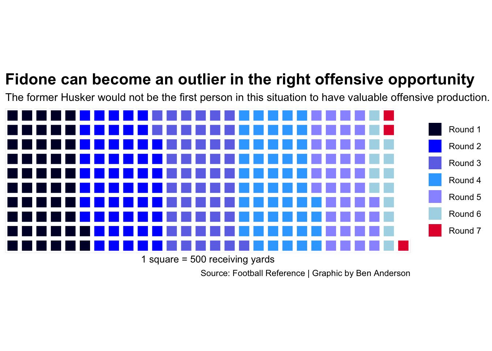
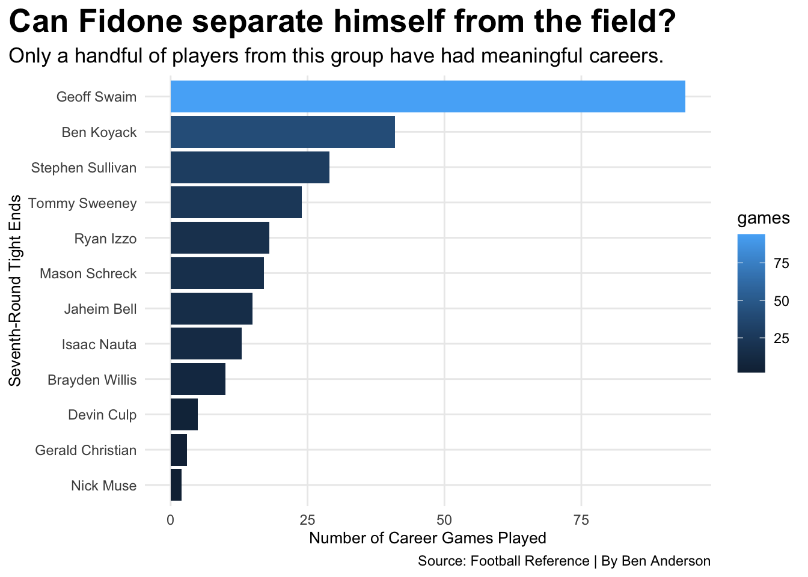

How successful are tight ends drafted in the seventh round?
football
draft
Nebraska
Author
Ben Anderson
Published
April 30, 2025
As the 2025 NFL draft went along, many teams selected players that they hope can put their franchise on the best path to success.
Whether that was the Tennessee Titans picking first overall after a dreadful 3-14 season, or the Philadelphia Eagles coming off a massive 40-22 victory over the Kansas City Chiefs in Super Bowl LIX, every team was looking for that missing piece that could put their team at the top of the league.
Finally, at pick No. 219 in the seventh round, the New York Giants selected tight end Thomas Fidone II out of Nebraska.
Fidone, who was ranked as the No. One tight end in the 2021 recruiting class, suffered two ACL injuries at the beginning of his career and struggled to get on the field in his first two seasons. The Council Bluffs, Iowa native was the highest-rated recruit to sign with the Huskers since 2008.
After playing every game in back-to-back seasons for the Big Red, Fidone put together 260 receiving yards in 2023 and 373 in 2024. After underperforming seasons in his college career, it begs the question, how successful are tight ends drafted in the seventh round in the NFL?
Sports Reference provides receiving stats from every NFL season and it can be paired with draft data to represent the receiving stats of every player drafted in the NFL since 2010.
Here is the number of receiving yards for every tight end by the round they were drafted in.
Code
library(tidyverse)library(cfbfastR)library(gt)library(waffle)picks15 <-cfbd_draft_picks(2015)picks16 <-cfbd_draft_picks(2016)picks17 <-cfbd_draft_picks(2017)picks18 <-cfbd_draft_picks(2018)picks19 <-cfbd_draft_picks(2019)picks20 <-cfbd_draft_picks(2020)picks21 <-cfbd_draft_picks(2021)picks22 <-cfbd_draft_picks(2022)picks23 <-cfbd_draft_picks(2023)picks24 <-cfbd_draft_picks(2024)picks <-bind_rows(picks15, picks16, picks17, picks18, picks19, picks20, picks21, picks22, picks23, picks24)receiving <-read_csv("nfl_qb_receiving_20102024.csv")tightends <- receiving |>filter(pos=="TE")toptenends <- tightends |>top_n(10, wt=yds)seventhroundte <- picks |>filter(round=="7", position=="Tight End")seventhrounderends <- tightends |>filter(player=="Ben Koyack"| player=="Geoff Swaim"|player=="Rory Anderson"|player=="Gerald Christian"|player=="Beau Sandland"|player=="Mason Schreck"|player=="Ryan Izzo"|player=="Isaac Nauta"|player=="Tommy Sweeney"|player=="Alize Mack"|player=="Caleb Wilson"|player=="Stephen Sullivan"|player=="Nick Muse"|player=="Zack Kuntz"|player=="Brayden Willis"|player=="Jaheim Bell"|player=="Devin Culp")joinedtightends <- tightends |>filter(season >=2016) |>left_join(picks, by=join_by(player == name)) |>filter(is.na(pick) ==FALSE)draftedte <- joinedtightends |>group_by(player, round, overall) |>summarize(games =sum(g),games_started =sum(gs),receptions =sum(rec),yards =sum(yds),touchdowns =sum(td), ) topseventhtes <- draftedte |>filter(round =="7") |>top_n(10, wt=yards)rounds <-c("Round 1"=26336, "Round 2"=28106, "Round 3"=26804, "Round 4"=26913, "Round 5"=20489, "Round 6"=7453, "Round 7"=1793) waffle(rounds/500,rows =10,xlab="1 square = 500 receiving yards",colors =c("#000033", "#0000ff", "#6e75e8", "#37a9ff", "#9999ff", "lightblue", "#E41C38") ) +labs(title="Fidone can become an outlier in the right offensive opportunity",subtitle="The former Husker would not be the first person in this situation to have valuable offensive production.",caption="Source: Football Reference | Graphic by Ben Anderson") +theme(plot.title =element_text(size =16, face ="bold"),axis.title =element_text(size =10),axis.title.y =element_blank() )

Obviously as expected, seventh-round draft choices do not have nearly as many yards as the players that were drafted with higher expectations in the earlier rounds. Based on the chart, there is not a significant drop-off until you get into the round six territory. Is it possible for the former high school All-American to tap into his potential in the right situation and exceed expectations? There have been crazier stories in sports when players receive the chance.
With 16 total tight ends getting drafted in the 2025 NFL draft, there is a small likelihood that each of those players will turn out to be successful. A successful seventh-round pick should be looked at as someone who has a longer career in terms of games played. Take a look at a comparison of the top seventh-round tight ends in terms of games played.
Code
ggplot() +geom_bar(data=topseventhtes, aes(x=reorder(player, games), weight=games, fill=games)) +coord_flip() +labs(x="Seventh-Round Tight Ends", y="Number of Career Games Played", title="Can Fidone separate himself from the field?", subtitle="Only a handful of players from this group have had meaningful careers.", caption="Source: Football Reference | By Ben Anderson" ) +theme_minimal() +theme(plot.title =element_text(size =20, face ="bold"),axis.title =element_text(size =10), plot.subtitle =element_text(size=13), panel.grid.minor =element_blank(),plot.title.position ="plot" )

The top person on this chart is the former 246th pick in the 2015 draft by the Dallas Cowboys, Geoff Swaim. Swaim played in eight games for Cleveland last year before he was placed on the injured reserve with a concussion, ending his season.
Swaim’s 10 years of experience is a strong ceiling for a career if Fidone’s health can hold up. What are other potential situations for Fidone that are not horrific? Here are the career statistics of the other tight ends that heard their name called in the seventh round.
Code
topseventhtes |>ungroup() |>select(-round, -games_started, -games) |>arrange(desc(yards)) |>gt() |>cols_label(player ="Player",overall ="Pick Selected",receptions ="Receptions",yards ="Yards",touchdowns ="Touchdowns" ) |>tab_header(title ="Fidone is not likely to get a second contract",subtitle ="Looking at how seventh-round tight ends made their mark in the NFL." ) |>tab_style(style =cell_text(color ="black", weight ="bold", align ="left"),locations =cells_title("title") ) |>tab_style(style =cell_text(color ="black", align ="left", size=14),locations =cells_title("subtitle") ) |>tab_source_note(source_note =md("**By:** Ben Anderson | **Source:** Football Reference") ) |>tab_style(locations =cells_column_labels(columns =everything()),style =list(cell_borders(sides ="bottom", weight =px(3)),cell_text(weight ="bold", size=12) ) ) |>opt_row_striping() |>opt_table_lines("none") |>data_color(columns =vars(yards),colors = scales::col_numeric(palette =c("white", "#37a9ff", "#094d8a"),domain =NULL) ) |>data_color(columns =vars(receptions),colors = scales::col_numeric(palette =c("white", "#37a9ff", "#094d8a"),domain =NULL) )
Fidone is not likely to get a second contract
Looking at how seventh-round tight ends made their mark in the NFL.
Player
Pick Selected
Receptions
Yards
Touchdowns
Geoff Swaim
246
101
770
5
Ryan Izzo
250
19
313
1
Ben Koyack
229
25
208
1
Stephen Sullivan
251
14
171
0
Tommy Sweeney
228
18
165
1
Devin Culp
246
5
88
0
Nick Muse
227
1
22
0
Jaheim Bell
231
2
20
0
Isaac Nauta
224
3
16
0
Gerald Christian
256
1
14
0
Mason Schreck
251
2
6
0
Brayden Willis
247
0
0
0
By: Ben Anderson | Source: Football Reference
There is another chart with Swaim leading the way by a large margin. With only five career touchdowns while playing for five different teams, he has made a solid career for himself over time.
Swaim reportedly has $14,515,726 in career earnings. With the next closest person totaling only 41 career games, his longevity should not be overlooked.
Would Thomas Fidone II be content with a 14 million-dollar career over ten years in the NFL? It would be a much better option compared to the other players that have been in his situation.